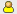
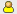

Отображение записей и связь с людьми
Некоторые инструменты Kablink Teaming (например, списки папок и результаты поиска) отображают сводку информации записи. Информация в сводке позволяет просмотреть запись или связаться с создателем записи, как описано в следующих разделах.
Отображение записей
Чтобы отобразить запись, щелкните заголовок записи.
Можно настраивать способ отображения записи в Teaming. Когда открывается запись, Teaming может отображать ее как наложение, на новой странице или во всплывающем окне.
Чтобы изменить способ отображения записей в Teaming, выполните следующие действия.
-
На главной боковой панели в разделе щелкните .
-
Выберите способ просмотра записей.
Связь с людьми
Сводка записи содержит значок , расположенный рядом с именем автора. Значок "Присутствие" имеет следующие возможные состояния.
 


-
Зеленый Пользователь присутствует в сети и активен.
-
Желтый Пользователь был активен недавно, но сейчас отсутствует.
-
Серый Пользователь не вошел в систему как клиент Kablink Conferencing.
-
Белый Состояние пользователя неизвестно.
Для связи с данным лицом щелкните значок и выберите соответствующий пункт меню. Можно запустить немедленное собрание или запланировать собрание с пользователем, вызвать пользователя, добавить пользователя в свой буфер обмена или просмотреть его микроблог.